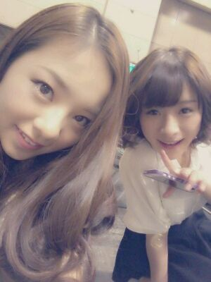

| 2012/10 02 Tue | 川村真洋 名古屋個別握手会★☆★ ろってぃー |
ほっほーーぃ ・∀・)))♪
今日はカフェ☆にて
blog更新でぇす ・ω・´)
ちょ-,
さむぅ〜〜いでし。・∀・`)
なぜかとぉ? なぜかとぉぉ?
それは,
冷たいソフトクリーム
(白玉・小豆付き)←これ重要だってばね。
を食べて
冷房直撃しちょんよ。
あっ,!!
大分べん★わら
申しおくれました。
ろってぃーでしっ・ω・´)ゞ

この写真は
大好きな美雲とでし♪
名古屋の個別握手会)))
私服はこんな感じです☆
モコモコ。‥
モコモコ。
可愛いって言ってくれて
ありがとお。
照れちまうなあ〜 〃ε〃)笑
「さすがっ)) オシャレ番長☆!!」
「その靴 ほんとかっけえなぁ〜」
「寒いんか熱いんかどっちやねん!!?」
等々 言われましたが,
3つめに関しては
お腹と背中だけ
ポカポカしてたねっ・ω < )ゞ
短パンは短くて
ちょっと恥ずかしかったね。
握手会 とっても楽しかったです。
本当に本当に皆様
ありがとお*^^*
いつも待ち遠しくて待ち遠しくて
また,
いいっぱいの元気を
もらいました。
本当っ)))
サンキュー★☆★
次は 横浜だねっ♪
まひろ待ってるね。
きてね (・ω・)ゞ
皆のこともっと知りたいのっ♪
自分のこととか
ぎゃんぎゃんしゃべってねん♪
自慢話とかも
聞くの好きよ*^^*
まひろもいいっぱい
お話するね♪
あっ 、それと
この前 実家帰ったあと
そっこう 地元のお友だちと
会ったよ(´・ω・`)♪
本当 みんな変わってないなあ。
って思った^^
何でもどんな話でも
笑い話にして
『すごいなぁ〜。』
って思った^^
皆、懐かしい
小学生の頃の話とか
中学生の頃の話とか
し始めて
ずっと爆笑してて、
久しぶりにその光景を
みているだけで
心がやすらげた(⌒‐⌒)
次の日は 高校になってから
出会った 大好きなお友だちと
会ったよ。
みんな。
楽しい時間をありかとう。
姉のあっちゃん♪とも
昼間 梅田に遊びに行った。
駅から 少し歩くんだけど、
すっごい
レトロな所があって
かわいらしいカフェが
いっぱい並んでて
レトロなお店,雑貨屋があって
『えっ? こんな所にも!?』
ってゆう所、
家と家の間の
細い通り道にも可愛らしい
カフェとかがあって
すっごい楽しかった*^^*)
また写メ載せるねっ♪
また更新します。
以上っ)) ろってぃー♪